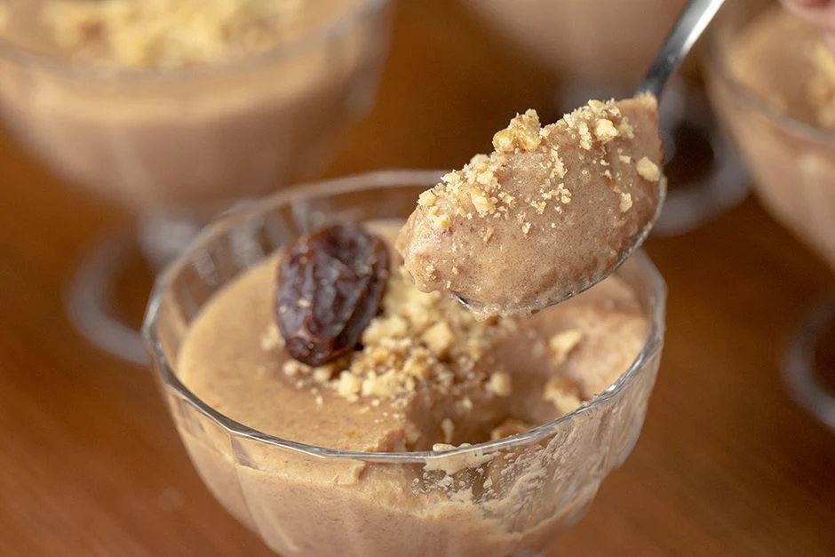

Hurma Uyutması Tarifi İçin Malzemeler
- 2 yemek kaşığı buğday nişastası
- 3,5 su bardağı süt
- 20 adet hurma (doğranmış)
Üzeri için
- 4 yemek kaşığı dövülmüş ceviz içi

Yapılışı
- Bir kasede nişasta ve 1 su bardağı sütü, nişasta eriyene kadar karıştırın.
- Orta boy tencereye geriye kalan sütü ekleyin ve kaynama noktasına gelmeden hemen önce ocaktan alın.
- Doğranmış hurmaları ısıttığınız sütün içerisine aktarın.Kapağını kapatıp hurmalar yumuşayana ve sütü hafif koyu kıvama getirene kadar, yaklaşık 2 saat bekletin.
- Hurmaları blender yardımıyla iyice ezin.
- Önceden hazırlamış olduğunuz nişastalı süt karışımını da tencerenin içerisine ekleyin ve tencereyi ocağa alın.
- Orta ateşte kıvam alana kadar pişirin ve ocaktan alın.
- Hurma uyutmasını dilediğiniz boyutta kaselere aktarın ve en az 1 saat buzdolabında soğutun.
- Üzerini dövülmüş ceviz ve hurmayla süsleyip servis edin, afiyet olsun!